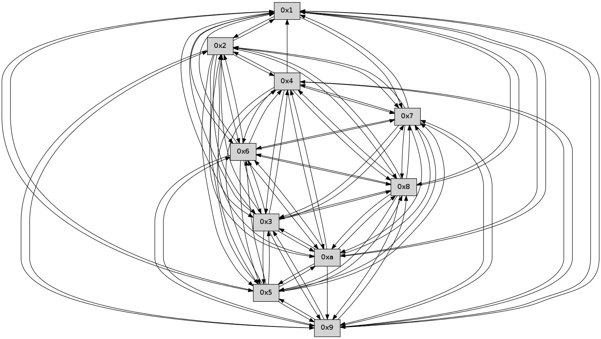

>> << IDX [start] -100 -25 -5 +0 +5 +25 +100 [345.629784107]
 Previous packets
----------------------------------------------------------------------
340.112861 beacon01(faad) #0 coord=01,02,03,04,05,06,07,0a,09,08 cycle=688.0ms assoc
-- color-indic=0 64 63 20
340.122842 beacon02(faad) #0 coord=01,02,03,04,05,06,07,0a,09,08 cycle=688.0ms assoc 64 f0 11
340.132843 beacon03(faad) #0 coord=01,02,03,04,05,06,07,0a,09,08 cycle=688.0ms assoc 64 8a 5c
340.142845 beacon04(faad) #0 coord=01,02,03,04,05,06,07,0a,09,08 cycle=688.0ms assoc 64 fd b6
340.152845 beacon05(faad) #0 coord=01,02,03,04,05,06,07,0a,09,08 cycle=688.0ms assoc 64 87 fb
340.162845 beacon06(faad) #0 coord=01,02,03,04,05,06,07,0a,09,08 cycle=688.0ms assoc 64 09 2c
340.172846 beacon07(faad) #0 coord=01,02,03,04,05,06,07,0a,09,08 cycle=688.0ms assoc 64 73 61
340.182850 beacon0a(faad) #0 coord=01,02,03,04,05,06,07,0a,09,08 cycle=688.0ms assoc 64 02 6a
340.192850 beacon09(faad) #0 coord=01,02,03,04,05,06,07,0a,09,08 cycle=688.0ms assoc 64 8c bd
340.202849 beacon08(faad) #0 coord=01,02,03,04,05,06,07,0a,09,08 cycle=688.0ms assoc 64 f6 f0
340.214020 [Hello(7): seq=221 sym=2,3,5,6,4,8,9,10,1 sysInfo= stat=2:11,0,0,0/3:9,0,0,0/5:2,0,0,0/6:7,0,0,0/4:0,0,0,0/8:13,0,0,0/9:15,0,0,0/10:11,0,0,0/1:3,0,0,0]
340.216854 [Hello(10): seq=153 sym=6,3,2,5,9,8,7,4,1 sysInfo= stat=6:5,0,0,0/3:15,0,0,0/2:6,0,0,0/5:6,0,0,0/9:3,0,0,0/8:9,0,0,0/7:10,0,0,0/4:2,0,0,0/1:14,0,0,0]
340.220230 [Hello(8): seq=164 sym=5,2,3,4,7,6,9,10,1 sysInfo= stat=5:10,0,0,0/2:12,0,0,0/3:11,0,0,0/4:1,0,0,0/7:5,0,0,0/6:9,0,0,0/9:10,0,0,0/10:9,0,0,0/1:5,0,0,0]
340.225927 [Hello(6): seq=221 sym=2,3,5,4,7,9,8,10,1 sysInfo= stat=2:14,0,0,0/3:12,0,0,0/5:15,0,0,0/4:7,0,0,0/7:14,0,0,0/9:3,0,0,0/8:2,0,0,0/10:15,0,0,0/1:2,0,0,0]
340.237572 [Hello(9): seq=164 sym=5,2,3,4,7,6,8,10,1 sysInfo= stat=5:2,0,0,0/2:0,0,0,0/3:0,0,0,0/4:10,0,0,0/7:4,0,0,0/6:11,0,0,0/8:14,0,0,0/10:13,0,0,0/1:6,0,0,0]
----------------------------------------------------------------------
340.900995 beacon01(faad) #0 coord=01,02,03,04,05,06,07,0a,09,08 cycle=688.0ms assoc
-- color-indic=0 64 a7 2e
340.910977 beacon02(faad) #0 coord=01,02,03,04,05,06,07,0a,09,08 cycle=688.0ms assoc 64 34 1f
340.920978 beacon03(faad) #0 coord=01,02,03,04,05,06,07,0a,09,08 cycle=688.0ms assoc 64 4e 52
340.930978 beacon04(faad) #0 coord=01,02,03,04,05,06,07,0a,09,08 cycle=688.0ms assoc 64 39 b8
340.940977 beacon05(faad) #0 coord=01,02,03,04,05,06,07,0a,09,08 cycle=688.0ms assoc 64 43 f5
340.950979 beacon06(faad) #0 coord=01,02,03,04,05,06,07,0a,09,08 cycle=688.0ms assoc 64 cd 22
340.960978 beacon07(faad) #0 coord=01,02,03,04,05,06,07,0a,09,08 cycle=688.0ms assoc 64 b7 6f
340.970982 beacon0a(faad) #0 coord=01,02,03,04,05,06,07,0a,09,08 cycle=688.0ms assoc 64 c6 64
340.980983 beacon09(faad) #0 coord=01,02,03,04,05,06,07,0a,09,08 cycle=688.0ms assoc 64 48 b3
340.990982 beacon08(faad) #0 coord=01,02,03,04,05,06,07,0a,09,08 cycle=688.0ms assoc 64 32 fe
341.002152 [Hello(5): seq=222 sym=7,6,4,3,1,9,8,10,2 sysInfo= stat=7:8,0,0,0/6:14,0,0,0/4:3,0,0,0/3:13,0,0,0/1:2,0,0,0/9:5,0,0,0/8:9,0,0,0/10:12,0,0,0/2:11,0,0,0]
341.004847 [Hello(3): seq=222 sym=1,7,6,2,4,8,9,10,5 sysInfo= stat=1:4,0,0,0/7:5,0,0,0/6:2,0,0,0/2:10,0,0,0/4:1,0,0,0/8:5,0,0,0/9:12,0,0,0/10:6,0,0,0/5:7,0,0,0]
341.007401 [Hello(4): seq=222 sym=5,7,6,2,3,9,8,10,1 sysInfo= stat=5:9,0,0,0/7:10,0,0,0/6:14,0,0,0/2:13,0,0,0/3:0,0,0,0/9:6,0,0,0/8:14,0,0,0/10:0,0,0,0/1:3,0,0,0]
341.010877 [Hello(2): seq=219 sym=4,5,7,6,3,9,8,10,1 sysInfo= stat=4:2,0,0,0/5:4,0,0,0/7:3,0,0,0/6:13,0,0,0/3:5,0,0,0/9:15,0,0,0/8:12,0,0,0/10:11,0,0,0/1:1,0,0,0]
341.020938 [Hello(1): seq=130 sym=2,9,5,10,3,8,6,7 sysInfo= stat=2:12,0,0,0/9:10,0,0,0/5:15,0,0,0/10:14,0,0,0/3:8,0,0,0/8:9,0,0,0/6:1,0,0,0/7:5,0,0,0]
----------------------------------------------------------------------
341.689127 beacon01(faad) #0 coord=01,02,03,04,05,06,07,0a,09,08 cycle=688.0ms assoc
-- color-indic=0 64 1b 2b
341.699110 beacon02(faad) #0 coord=01,02,03,04,05,06,07,0a,09,08 cycle=688.0ms assoc 64 88 1a
341.709110 beacon03(faad) #0 coord=01,02,03,04,05,06,07,0a,09,08 cycle=688.0ms assoc 64 f2 57
341.719110 beacon04(faad) #0 coord=01,02,03,04,05,06,07,0a,09,08 cycle=688.0ms assoc 64 85 bd
341.729111 beacon05(faad) #0 coord=01,02,03,04,05,06,07,0a,09,08 cycle=688.0ms assoc 64 ff f0
341.739111 beacon06(faad) #0 coord=01,02,03,04,05,06,07,0a,09,08 cycle=688.0ms assoc 64 71 27
341.749112 beacon07(faad) #0 coord=01,02,03,04,05,06,07,0a,09,08 cycle=688.0ms assoc 64 0b 6a
341.759114 beacon0a(faad) #0 coord=01,02,03,04,05,06,07,0a,09,08 cycle=688.0ms assoc 64 7a 61
341.779115 beacon08(faad) #0 coord=01,02,03,04,05,06,07,0a,09,08 cycle=688.0ms assoc 64 8e fb
341.790602 [Hello(8): seq=165 sym=5,2,3,4,7,6,9,10,1 sysInfo= stat=5:11,0,0,0/2:13,0,0,0/3:12,0,0,0/4:2,0,0,0/7:5,0,0,0/6:10,0,0,0/9:11,0,0,0/10:9,0,0,0/1:6,0,0,0]
341.794249 [Hello(10): seq=154 sym=6,3,2,5,9,8,7,4,1 sysInfo= stat=6:6,0,0,0/3:0,0,0,0/2:7,0,0,0/5:7,0,0,0/9:4,0,0,0/8:10,0,0,0/7:10,0,0,0/4:3,0,0,0/1:15,0,0,0]
341.796970 [Hello(9): seq=165 sym=5,2,3,4,7,6,8,10,1 sysInfo= stat=5:3,0,0,0/2:1,0,0,0/3:1,0,0,0/4:11,0,0,0/7:4,0,0,0/6:11,0,0,0/8:14,0,0,0/10:13,0,0,0/1:7,0,0,0]
341.803013 [Hello(6): seq=222 sym=2,3,5,4,7,9,8,10,1 sysInfo= stat=2:15,0,0,0/3:13,0,0,0/5:0,0,0,0/4:8,0,0,0/7:14,0,0,0/9:4,0,0,0/8:2,0,0,0/10:15,0,0,0/1:3,0,0,0]
341.811466 [Hello(7): seq=222 sym=2,3,5,6,4,8,9,10,1 sysInfo= stat=2:12,0,0,0/3:10,0,0,0/5:3,0,0,0/6:8,0,0,0/4:1,0,0,0/8:14,0,0,0/9:0,0,0,0/10:12,0,0,0/1:4,0,0,0]
----------------------------------------------------------------------
342.477259 beacon01(faad) #0 coord=01,02,03,04,05,06,07,0a,09,08 cycle=688.0ms assoc
-- color-indic=0 64 2f 33
342.487242 beacon02(faad) #0 coord=01,02,03,04,05,06,07,0a,09,08 cycle=688.0ms assoc 64 bc 02
342.497241 beacon03(faad) #0 coord=01,02,03,04,05,06,07,0a,09,08 cycle=688.0ms assoc 64 c6 4f
342.507243 beacon04(faad) #0 coord=01,02,03,04,05,06,07,0a,09,08 cycle=688.0ms assoc 64 b1 a5
342.517244 beacon05(faad) #0 coord=01,02,03,04,05,06,07,0a,09,08 cycle=688.0ms assoc 64 cb e8
342.527243 beacon06(faad) #0 coord=01,02,03,04,05,06,07,0a,09,08 cycle=688.0ms assoc 64 45 3f
342.537244 beacon07(faad) #0 coord=01,02,03,04,05,06,07,0a,09,08 cycle=688.0ms assoc 64 3f 72
342.547248 beacon0a(faad) #0 coord=01,02,03,04,05,06,07,0a,09,08 cycle=688.0ms assoc 64 4e 79
342.557248 beacon09(faad) #0 coord=01,02,03,04,05,06,07,0a,09,08 cycle=688.0ms assoc 64 c0 ae
342.567249 beacon08(faad) #0 coord=01,02,03,04,05,06,07,0a,09,08 cycle=688.0ms assoc 64 ba e3
342.579050 [Hello(2): seq=220 sym=4,5,7,6,3,9,8,10,1 sysInfo= stat=4:2,0,0,0/5:4,0,0,0/7:4,0,0,0/6:14,0,0,0/3:5,0,0,0/9:0,0,0,0/8:13,0,0,0/10:12,0,0,0/1:2,0,0,0]
342.582054 [Hello(4): seq=223 sym=5,7,6,2,3,9,8,10,1 sysInfo= stat=5:9,0,0,0/7:11,0,0,0/6:15,0,0,0/2:14,0,0,0/3:0,0,0,0/9:7,0,0,0/8:15,0,0,0/10:1,0,0,0/1:4,0,0,0]
342.586690 [Hello(1): seq=131 sym=2,9,5,10,3,8,6,7 sysInfo= stat=2:12,0,0,0/9:11,0,0,0/5:15,0,0,0/10:15,0,0,0/3:8,0,0,0/8:10,0,0,0/6:2,0,0,0/7:6,0,0,0]
342.595436 [Hello(5): seq=223 sym=7,6,4,3,1,9,8,10,2 sysInfo= stat=7:9,0,0,0/6:15,0,0,0/4:4,0,0,0/3:14,0,0,0/1:3,0,0,0/9:6,0,0,0/8:10,0,0,0/10:13,0,0,0/2:12,0,0,0]
342.598009 [Hello(3): seq=223 sym=1,7,6,2,4,8,9,10,5 sysInfo= stat=1:5,0,0,0/7:6,0,0,0/6:3,0,0,0/2:11,0,0,0/4:2,0,0,0/8:6,0,0,0/9:13,0,0,0/10:7,0,0,0/5:7,0,0,0]
----------------------------------------------------------------------
343.265391 beacon01(faad) #0 coord=01,02,03,04,05,06,07,0a,09,08 cycle=688.0ms assoc
-- color-indic=0 64 93 36
343.275373 beacon02(faad) #0 coord=01,02,03,04,05,06,07,0a,09,08 cycle=688.0ms assoc 64 00 07
343.285374 beacon03(faad) #0 coord=01,02,03,04,05,06,07,0a,09,08 cycle=688.0ms assoc 64 7a 4a
343.295374 beacon04(faad) #0 coord=01,02,03,04,05,06,07,0a,09,08 cycle=688.0ms assoc 64 0d a0
343.305373 beacon05(faad) #0 coord=01,02,03,04,05,06,07,0a,09,08 cycle=688.0ms assoc 64 77 ed
343.315374 beacon06(faad) #0 coord=01,02,03,04,05,06,07,0a,09,08 cycle=688.0ms assoc 64 f9 3a
343.325374 beacon07(faad) #0 coord=01,02,03,04,05,06,07,0a,09,08 cycle=688.0ms assoc 64 83 77
343.335381 beacon0a(faad) #0 coord=01,02,03,04,05,06,07,0a,09,08 cycle=688.0ms assoc 64 f2 7c
343.345380 beacon09(faad) #0 coord=01,02,03,04,05,06,07,0a,09,08 cycle=688.0ms assoc 64 7c ab
343.355379 beacon08(faad) #0 coord=01,02,03,04,05,06,07,0a,09,08 cycle=688.0ms assoc 64 06 e6
343.367183 [Hello(10): seq=155 sym=6,3,2,5,9,8,7,4,1 sysInfo= stat=6:7,0,0,0/3:1,0,0,0/2:8,0,0,0/5:8,0,0,0/9:5,0,0,0/8:10,0,0,0/7:11,0,0,0/4:4,0,0,0/1:0,0,0,0]
343.370200 [Hello(8): seq=166 sym=5,2,3,4,7,6,9,10,1 sysInfo= stat=5:12,0,0,0/2:14,0,0,0/3:13,0,0,0/4:3,0,0,0/7:6,0,0,0/6:11,0,0,0/9:12,0,0,0/10:10,0,0,0/1:7,0,0,0]
343.372692 [Hello(9): seq=166 sym=5,2,3,4,7,6,8,10,1 sysInfo= stat=5:4,0,0,0/2:2,0,0,0/3:2,0,0,0/4:12,0,0,0/7:5,0,0,0/6:12,0,0,0/8:14,0,0,0/10:13,0,0,0/1:8,0,0,0]
343.377687 [Hello(7): seq=223 sym=2,3,5,6,4,8,9,10,1 sysInfo= stat=2:13,0,0,0/3:11,0,0,0/5:4,0,0,0/6:8,0,0,0/4:2,0,0,0/8:14,0,0,0/9:0,0,0,0/10:12,0,0,0/1:5,0,0,0]
----------------------------------------------------------------------
344.053522 beacon01(faad) #0 coord=01,02,03,04,05,06,07,0a,09,08 cycle=688.0ms assoc
-- color-indic=0 64 57 38
344.063504 beacon02(faad) #0 coord=01,02,03,04,05,06,07,0a,09,08 cycle=688.0ms assoc 64 c4 09
344.073505 beacon03(faad) #0 coord=01,02,03,04,05,06,07,0a,09,08 cycle=688.0ms assoc 64 be 44
344.083506 beacon04(faad) #0 coord=01,02,03,04,05,06,07,0a,09,08 cycle=688.0ms assoc 64 c9 ae
344.093505 beacon05(faad) #0 coord=01,02,03,04,05,06,07,0a,09,08 cycle=688.0ms assoc 64 b3 e3
344.103506 beacon06(faad) #0 coord=01,02,03,04,05,06,07,0a,09,08 cycle=688.0ms assoc 64 3d 34
344.113506 beacon07(faad) #0 coord=01,02,03,04,05,06,07,0a,09,08 cycle=688.0ms assoc 64 47 79
344.123512 beacon0a(faad) #0 coord=01,02,03,04,05,06,07,0a,09,08 cycle=688.0ms assoc 64 36 72
344.133511 beacon09(faad) #0 coord=01,02,03,04,05,06,07,0a,09,08 cycle=688.0ms assoc 64 b8 a5
344.143511 beacon08(faad) #0 coord=01,02,03,04,05,06,07,0a,09,08 cycle=688.0ms assoc 64 c2 e8
344.155321 [Hello(5): seq=224 sym=7,6,4,3,1,9,8,10,2 sysInfo= stat=7:10,0,0,0/6:15,0,0,0/4:4,0,0,0/3:15,0,0,0/1:3,0,0,0/9:7,0,0,0/8:11,0,0,0/10:14,0,0,0/2:12,0,0,0]
344.157996 [Hello(4): seq=224 sym=5,7,6,2,3,9,8,10,1 sysInfo= stat=5:10,0,0,0/7:12,0,0,0/6:0,0,0,0/2:14,0,0,0/3:1,0,0,0/9:8,0,0,0/8:0,0,0,0/10:1,0,0,0/1:5,0,0,0]
344.164224 [Hello(1): seq=132 sym=2,9,5,10,3,8,6,7 sysInfo= stat=2:12,0,0,0/9:12,0,0,0/5:0,0,0,0/10:0,0,0,0/3:9,0,0,0/8:11,0,0,0/6:2,0,0,0/7:7,0,0,0]
344.167427 [Hello(2): seq=221 sym=4,5,7,6,3,9,8,10,1 sysInfo= stat=4:3,0,0,0/5:5,0,0,0/7:5,0,0,0/6:14,0,0,0/3:6,0,0,0/9:1,0,0,0/8:14,0,0,0/10:12,0,0,0/1:3,0,0,0]
344.171705 [Hello(3): seq=224 sym=1,7,6,2,4,8,9,10,5 sysInfo= stat=1:5,0,0,0/7:7,0,0,0/6:3,0,0,0/2:11,0,0,0/4:2,0,0,0/8:7,0,0,0/9:14,0,0,0/10:8,0,0,0/5:7,0,0,0]
----------------------------------------------------------------------
344.841654 beacon01(faad) #0 coord=01,02,03,04,05,06,07,0a,09,08 cycle=688.0ms assoc
-- color-indic=0 64 eb 3d
344.851635 beacon02(faad) #0 coord=01,02,03,04,05,06,07,0a,09,08 cycle=688.0ms assoc 64 78 0c
344.861636 beacon03(faad) #0 coord=01,02,03,04,05,06,07,0a,09,08 cycle=688.0ms assoc 64 02 41
344.871637 beacon04(faad) #0 coord=01,02,03,04,05,06,07,0a,09,08 cycle=688.0ms assoc 64 75 ab
344.881637 beacon05(faad) #0 coord=01,02,03,04,05,06,07,0a,09,08 cycle=688.0ms assoc 64 0f e6
344.891637 beacon06(faad) #0 coord=01,02,03,04,05,06,07,0a,09,08 cycle=688.0ms assoc 64 81 31
344.901638 beacon07(faad) #0 coord=01,02,03,04,05,06,07,0a,09,08 cycle=688.0ms assoc 64 fb 7c
344.911642 beacon0a(faad) #0 coord=01,02,03,04,05,06,07,0a,09,08 cycle=688.0ms assoc 64 8a 77
344.921643 beacon09(faad) #0 coord=01,02,03,04,05,06,07,0a,09,08 cycle=688.0ms assoc 64 04 a0
344.931643 beacon08(faad) #0 coord=01,02,03,04,05,06,07,0a,09,08 cycle=688.0ms assoc 64 7e ed
344.943116 [Hello(10): seq=156 sym=6,3,2,5,9,8,7,4,1 sysInfo= stat=6:7,0,0,0/3:2,0,0,0/2:9,0,0,0/5:9,0,0,0/9:6,0,0,0/8:11,0,0,0/7:12,0,0,0/4:5,0,0,0/1:1,0,0,0]
344.946446 [Hello(7): seq=224 sym=2,3,5,6,4,8,9,10,1 sysInfo= stat=2:14,0,0,0/3:12,0,0,0/5:5,0,0,0/6:8,0,0,0/4:3,0,0,0/8:14,0,0,0/9:0,0,0,0/10:12,0,0,0/1:6,0,0,0]
344.949611 [Hello(9): seq=167 sym=5,2,3,4,7,6,8,1 sysInfo= stat=5:5,0,0,0/2:3,0,0,0/3:3,0,0,0/4:13,0,0,0/7:6,0,0,0/6:12,0,0,0/8:14,0,0,0/1:9,0,0,0]
344.959535 [Hello(8): seq=167 sym=5,2,3,4,7,6,9,10,1 sysInfo= stat=5:13,0,0,0/2:15,0,0,0/3:14,0,0,0/4:4,0,0,0/7:7,0,0,0/6:11,0,0,0/9:13,0,0,0/10:10,0,0,0/1:8,0,0,0]